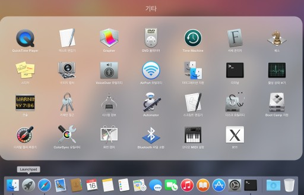

Boxen
귀찮고 시간 걸리는 개발환경 세팅을 자동화합시다.
Boxen은 무엇인가?
github에서 만든 Mac 셋업 자동화 툴.
하는 일?
Puppet 모듈을 이용해 각종 개발에 필요한 프로그램을 설치하고, 각 모듈별 설정을 일괄적용함.
설치하는 법
- 설치도중 슬립모드로 들어가지 않도록 에너지절약 설정을 변경합니다.

- 아래 한줄로 이루어진 커맨드를 모두 복사합니다(curl 부터 /tmp/install-boxen 까지 모두).
curl -s https://gist.githubusercontent.com/theand/2b86ae3fc64527cd804e/raw/a285fe21a76e7872e17df13cbe99b5e947afa844/install_boxen > /tmp/install-boxen; bash /tmp/install-boxen - 터미널을 열어서 붙여넣고 실행합니다.

- 실행하면 다음과 같은 화면이 나옵니다.
- 맥 사용자 암호와 깃헙 계정 정보를 입력하고 기다리면 됩니다.
- 모든 설치절차는 자동화되어 있습니다. 네트웍 상황에 따라 다르지만 2~3시간 정도 걸립니다.
- 종료하면 아래 화면과 같이 $으로 끝나는 쉘 프롬프트가 다시 뜹니다.
비고
- 모든 프로그램은 네트웍을 통해 다운로드받아 설치되기 때문에 네트웍과 서버 상황에 따라 일부 모듈의 경우 실패할 수 있고, 그 모듈에 의존성이 걸려있는 다른 모듈들도 설치되지 않을 수 있습니다.
/opt/boxen/repo/script/boxen스크립트를 실행함으로써 설치에 실패한 모듈만 다시 설치시도 할 수 있습니다.- 설치 완료 후 추가로 세팅할 수 있는 옵션이 3가지 있습니다.
source ~/mathiasdotfiles/bootstrap.sh: Mathias가 공개한 bash dotfiles를 적용합니다.(추천)source ~/mathiasdotfiles/brew.sh: 몇가지 추가적인 커맨드라인 툴을 설치합니다. (선택)source ~/mathiasdotfiles/.osx: Mac OSX defaults 커맨드를 이용한 일련의 설정이 적용됩니다. (선택)
- nginx가 기본적으로 80포트를 사용하도록 설정되었습니다.
- mysql은 13306 포트로 실행되고, root/비번없음으로 접속 가능합니다.
- Node.js, Ruby는 각각 nodenv, rbenv를 통해 다중버전관리가 되고 있습니다.
- brew 패키지는
/usr/local/Cellar의 경로로 설치됩니다. - boxen을 통해 설치한 프로그램은
/opt/boxen/script/nuke --all --force커맨드를 통해 대부분 깨끗이 삭제 가능합니다. GUI 프로그램은 Applications에서 수동으로 삭제해야 합니다. /opt/boxen/env.sh를 쉘 구동파일에서 불러줘야 합니다. bash 기반의 dotfiles 세팅이 되어있는 Mathias's dotfiles를 설치하면 처리되도록 되어 있습니다. zsh, fish 등을 사용하실 분은 각 환경에 맞게 처리해야 합니다.
FYI: 설치하는 모듈(Puppetfile, site.pp)
# from original boxen/our-boxen
- brewcask
- dnsmasq
- gcc
- git
- homebrew
- inifile
- nginx
- nodejs
- openssl
- pkgconfig
- repository
- ruby
- stdlib
- sudo
- xquartz
- csshx
- bash
- java
- python
- imagemagick
- vagrant
- mysql
- spf13vim3
- osx
- mathias's dotfiles
- and the other devtools including maven, gradle, tomcat7, git-flow, privoxy, ack, ag, and etc.
참고자료
- https://github.com/boxen
- https://github.com/boxen/our-boxen/tree/master/docs
- https://puppetlabs.com/